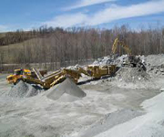

Portable Jaw crusher frame structure optimization
The assembly of the portable jaw crusher crusher station, in order to make the mechanical properties of a jaw crusher in the portable crushing station work better, prolong the service life, reduce a series of economic loss because of the frequent repair and bring the cause of failure, analysis of jaw crusher frame, put forward the optimization measures.
The main reason is the lack of a damaged beam rotational degrees of freedom, the beam to local small angle rotation, the solution is the beam by casting instead of welding, connecting beams and frame by casting instead of bolt connection.
Concrete steps
first, the beam cut from the frame, then the frame with steel digging part plate up, then the welding beam and frame connected by bolts, in order to reduce the lifting hole stress concentration in weld beam, lifting hole on both sides with a reinforcing rib, so as to ensure the welding beam solid and reliable, because the frame beam rotation limit trend will produce stress after optimization will be transferred to the beam. Therefore in the release of constraints, a small amount of increase in the beam loading, the optimized frame for further numerical simulation analysis, to verify the optimization effect.
After optimization, the frame is no longer because of constraints larger stress unnecessary degrees of freedom and cause, replace sb. is low stress distribution is more uniform. The deficiency is the bolt hole had a greater stress concentration, which in the actual processing is inevitable, but with the development of machining process, and can reduce the.
Portable Crusher Gallery